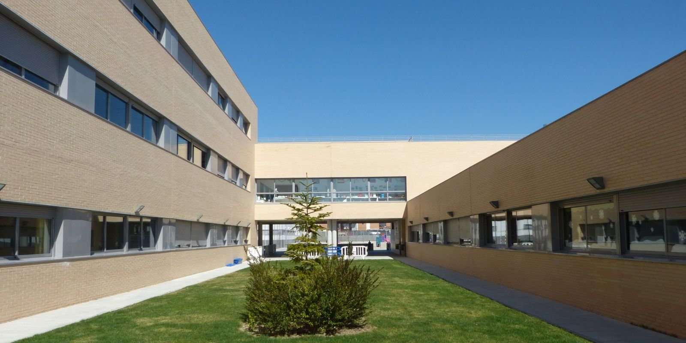

VALLE
Somos un centro de referencia para FP en Valdemoro y Sur de Madrid. Nuestros Ciclos Formativos son elegidos cada año por cientos de alumnos satisfechos que completan su formación con nosotros.
Valle del Miro ha creado una Formación Profesional que cuenta con una metodología innovadora, que combina los contenido oficiales facilitados por el Ministerio de Educación y la Comunidad de Madrid, con contenidos reales de empresas. Nuestras aulas están dotadas de los mejores recursos tecnológicos para facilitar el aprendizaje de nuestros alumnos y pensados para lograr una experiencia educativa innovadora.